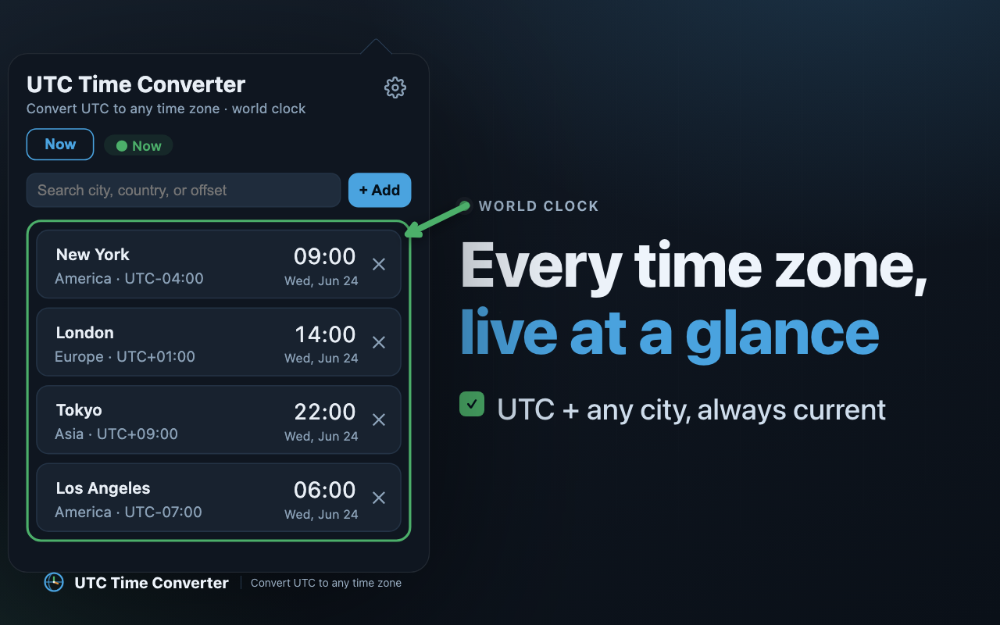
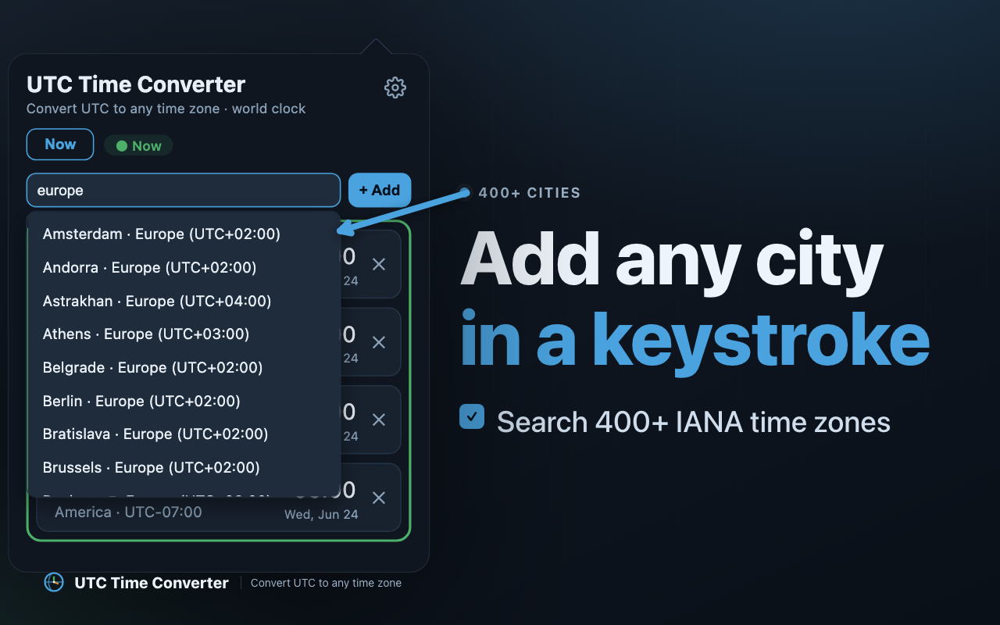
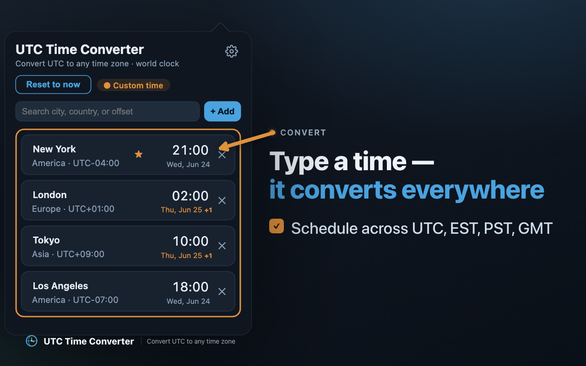

Thanks for installing! UTC Time Converter is a fast, private
UTC time converter and live world clock right in your toolbar.
Convert UTC to EST, PST, CST, GMT and any time zone, watch a live world clock, and plan meetings
across time zones — without doing time-zone math in your head.
convert UTC to ESTUTC to PSTUTC to GMTworld clocktime zone convertermeeting planner
Get started in 10 seconds
Pin it to your toolbar
Click the puzzle-piece Extensions icon in Chrome's toolbar and pin
UTC Time Converter so it's always one click away.
Open your live world clock
Click the icon to see the current time in every city you follow — a live world clock that
updates every second.

Add any city, country, or offset
Search a city, country, or a UTC/GMT offset and add it. Every IANA time zone is covered, with
automatic daylight-saving handling.

Type a time to convert it everywhere
Type a time and the UTC time converter re-computes it across every zone at once — convert UTC
to EST, PST, CST, or GMT in one click. Day-shift badges flag when a time crosses into the next day.

A few handy touches
Use it in your language — pick any of 53 languages: click the ⚙ gear in the popup
and choose from the Language menu. Right-to-left languages get a fully mirrored layout.
12- or 24-hour clock, seconds, GMT labels — all in ⚙ Settings, one click from the popup.
Custom UTC/GMT offset — add a fixed offset, or rename any row to track a person or team.
Custom times stick — a time you type stays put until you press Reset to now,
so you can browse and come back to your planned meeting.
100% on your device — no account, no tracking, no network requests. Your cities stay in your browser.